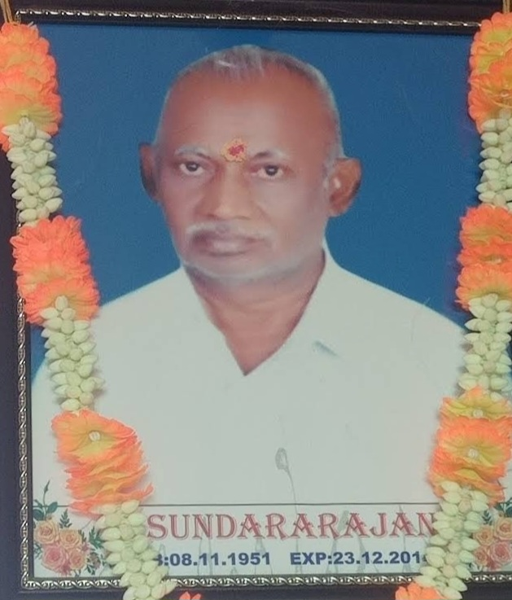

About Us
Established over 70 years ago in the heart of Srirengapuram, V.Sundararajan Store has been a trusted name in the community for generations. Founded by the visionary V.Sundararajan, the Store began with a mission to provide quality groceries and essential items to the local community.
Today, the legacy of excellence continues as the V.Sundararajan family proudly manages the stores, ensuring that the values of trust, quality, and customer satisfaction remain at the forefront. Known for its wide range of groceries and other essential items, the store has become a one-stop for households in the region.
At V.Sundararajan Store, tradition meets modernity, as the family strives to maintains the same high standards set by its founder while embracing new trends and customer needs. Wheather you're looking for fresh ingredients, pantry staples, or household necessities, the stores remains committed to serving you in the best possible way.
Visit V.Sundararajan Store today and experience the difference that 70 years of experiences and dedication bring!
For Navigation

Our Ecosystem
Our friendly and knowledgeable staff is always available to assist you, offering exceptional customer service that makes your shopping experience smooth and hassle-free. At V. Sundararajan Stores, we believe in going the extra mile to meet our customers' needs and make their visit a pleasant one. Whether you have a question, need help finding a product, or require recommendations, our team is always ready to help. We are not just a supermarket; we are a part of the community, aiming to provide you with a convenient, reliable, and enjoyable shopping experience. So, whether you're planning a quick stop for a few items or a full grocery haul, come visit V. Sundararajan Stores today. We guarantee that you'll leave with everything you need and more, satisfied with both our products and our service. Let us be your trusted partner for all your shopping needs!
About Our Founder of V. Sundararajan Stores
V. SUNDARARAJAN
V. Sundararajan, born on November 8, 1951, was a visionary and kind-hearted individual who founded V. Sundararajan Store in Srirengapuram. With a dedication to quality and servies, he built the store into a trusted name in the community.
He passed away on December 23, 2014, but his legacy lives on through his family, who continue to uphold his values and vision. V. Sundararajan will always be remembered as a good man whose hard work and integrity touched many lives.